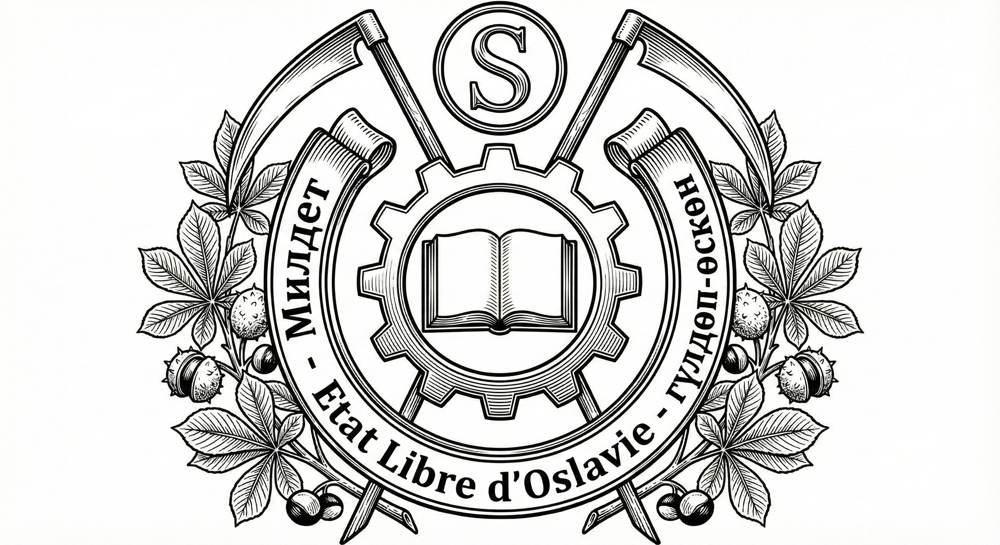

Second Etat d'Oslavie
Le sceau officiel oslave

Composition
La composition centrale présente une roue d'engrenage d'acier à douze dents, posée de face, enserrant un livre ouvert aux pages vierges. L'ensemble broche sur deux faux de guerre aux manches de bois brut et lames d'argent redressées, passées en sautoir (croisées en X). Le tout est soutenu et environné par deux rameaux de marronnier de sinople (vert), fruités de bogues épineuses d'or. À la base, un listel porte l'inscription "Etat Libre d'Oslavie" en caractères latins, soutenu par la devise bilingue "MILDET" (Devoir) à senestre et "ÖNÜGÜÜ" (Prospérité) à dextre. L'ensemble est timbré au chef d'un médaillon circulaire en "O" frappé du monogramme "S".
Sémantique
Le Sceau de l'Oslavie se distingue des héraldiques occidentales par l'absence d'animaux totémiques (lions, aigles). C'est une héraldique "constructiviste" : elle ne célèbre pas la noblesse du sang, mais la noblesse de l'outil et de la transformation humaine.
Le Cœur Techno-Juridique : L'engrenage aux arêtes vives ne symbolise pas uniquement l'industrie, mais la "Mécanique Étatique". Il représente une structure rigide, infatigable et parfaitement huilée qui maintient la cohésion nationale. En son centre, le Livre Ouvert rappelle que la force brute de l'acier est aveugle si elle n'est pas guidée par la Loi écrite et le Savoir. L'industrie protège la Loi ; la Loi dirige l'industrie.
Les Faux de Guerre : L'arrière-plan croisé présente des outils agricoles dont la lame a été redressée dans le prolongement du manche. C'est le rappel permanent du "Traumatisme Fondateur" : l'armée oslave n'est pas née d'une caste de chevaliers, mais de la mobilisation de paysans contraints de transformer leurs outils de travail en armes de défense. La paix oslave est une anomalie qu'il faut défendre avec les moyens du bord.
La Couronne de Marronnier : Loin des lauriers de victoire, l'Oslavie a choisi le Marronnier, arbre de nos avenues et de nos places publiques. Son Feuillage évoque l'ombrage protecteur de l'État sur le citoyen tandis que ses Bogues Épineuses rappellent une vérité fondamentale de notre éducation nationale : le fruit (la nation nourricière) est précieux, mais il est protégé par une écorce piquante. Pour accéder au cœur de l'Oslavie, il faut du courage et du travail.
La Devise : Le ruban serpente entre les branches avec une hiérarchie morale stricte. À gauche se lit "MILDET" (Le Devoir), concept qui oblige le citoyen envers la communauté. À droite, "ÖNÜGÜÜ" (La Prospérité). La lecture est sans appel : le Devoir précède toujours la Prospérité. Il n'y a pas de droits sans obligations préalables.
Utilisation
L'usage du Sceau de la Résilience n'est pas décoratif, il est la seule preuve irréfutable de la volonté étatique. La Matrice Unique de frappe (le coin en acier trempé original) ne quitte jamais l'enceinte du Palais Présidentiel. Elle est conservée sous garde armée permanente dans le coffre-fort de l'État-Major Particulier (Bureau du Colonel Krov), garantissant qu'aucune copie non autorisée ne puisse circuler.

50 francs oslaves forts
Tout texte de loi voté par le Cabinet est transmis au Conseil Constitutionnel dans une enveloppe scellée à la cire officielle. L'intégrité physique du sceau à la réception est la condition sine qua non de l'examen du texte ; toute fissure entraîne la caducité immédiate du projet.
Les convocations pour l'admission à l'Ordre du Mérite sont les seuls courriers civils bénéficiant de ce scellement, marquant la solennité de l'appel de l'État vers le citoyen.
Pour les communications remises en main propre aux dignitaires étrangers, le protocole impose que le courrier reste scellé durant le transport. Le sceau doit être brisé par l'agent oslave lui-même, sous les yeux du destinataire, avant la remise du pli. Cet acte rituel garantit que le message n'a été lu par aucun intermédiaire, pas même par les services du pays hôte.
Avis de Sécurité : Tout document officiel circulant hors de ces circuits et présentant un sceau brisé ou reconstitué doit être considéré comme falsifié et rapporté immédiatement aux autorités.